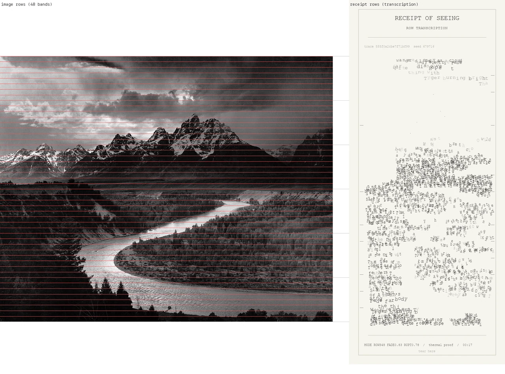
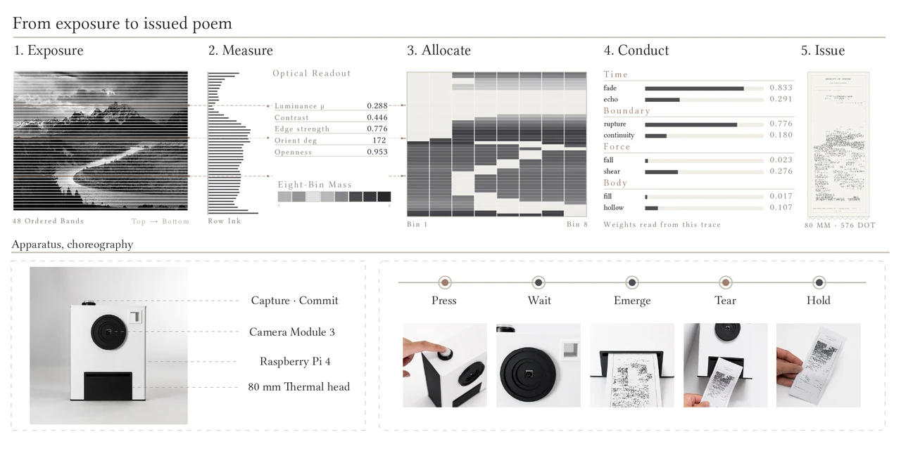
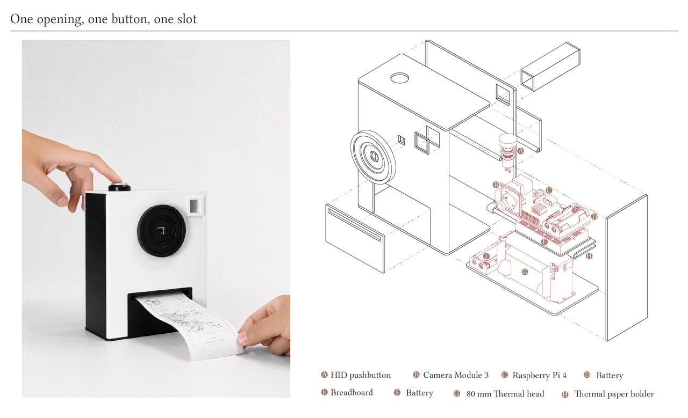
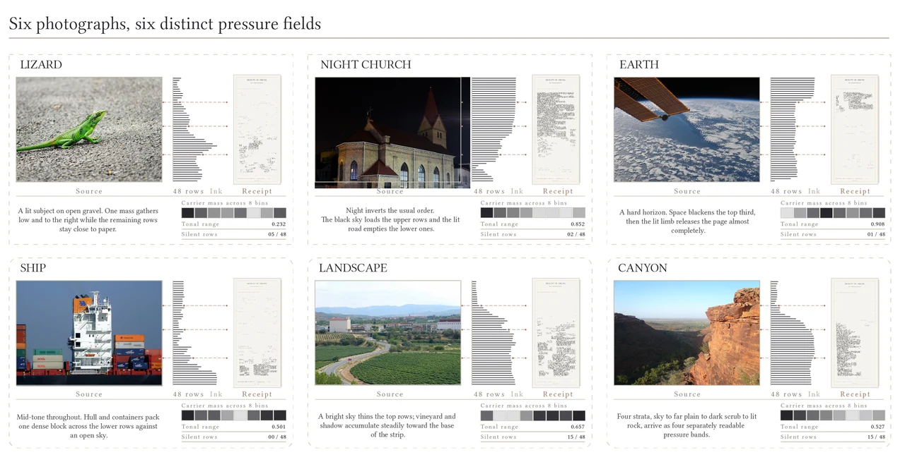
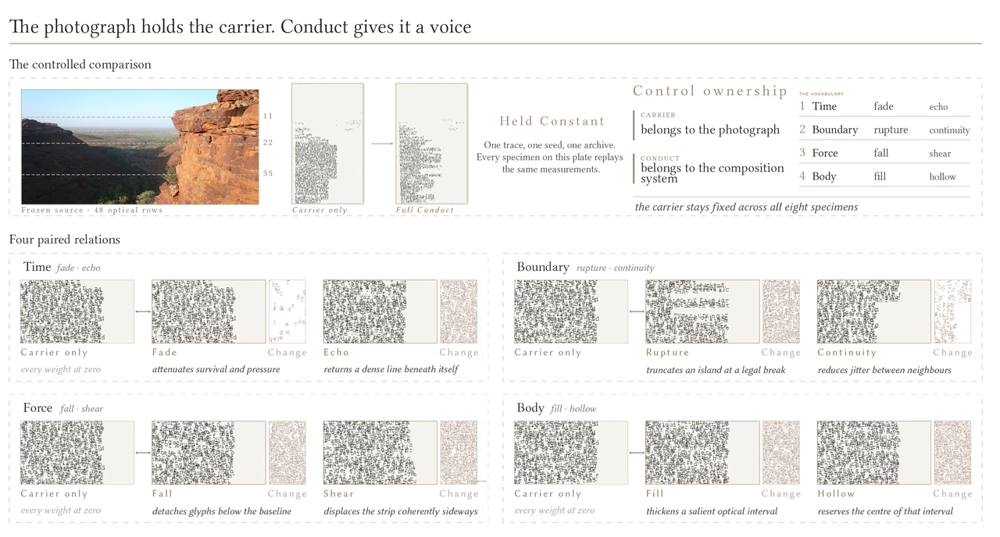
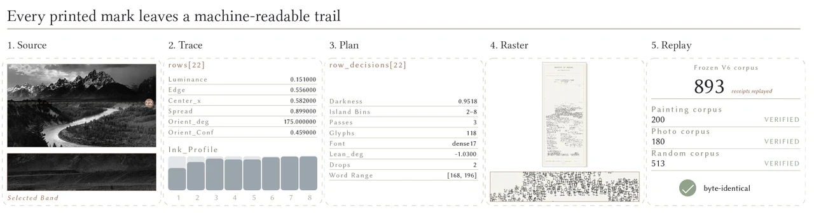
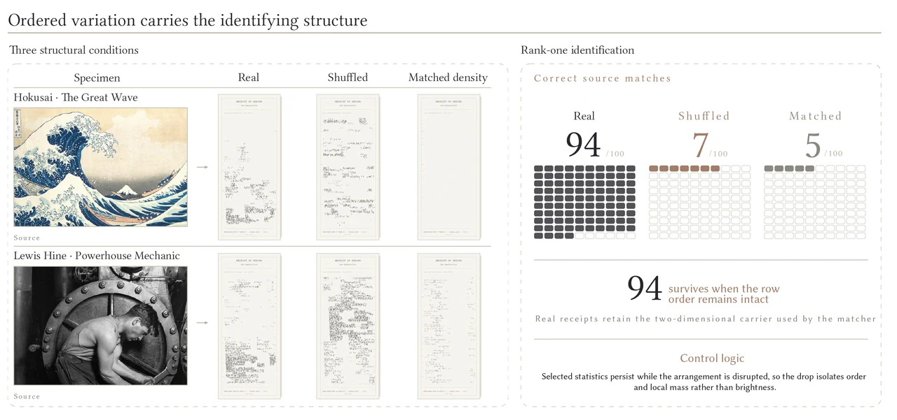
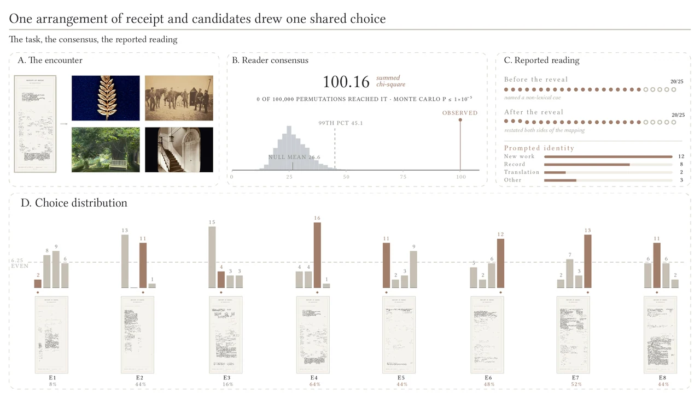
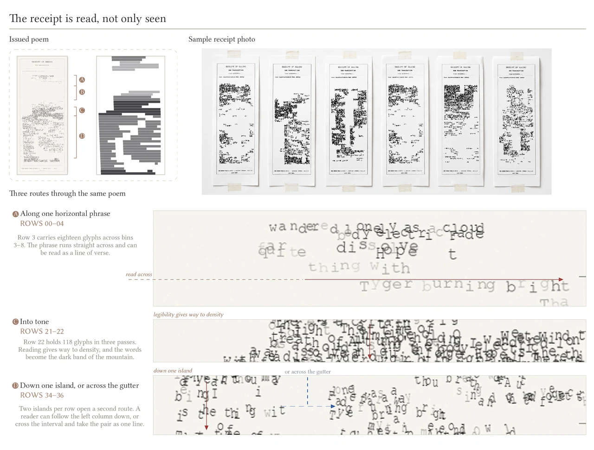

INT–γ: Receipt of Seeing
Personal ProjectTools & Technologies: Raspberry Pi 4, Raspberry Pi Camera Module 3, 80 mm ESC/POS thermal printer, image analysis, spatial typography, rule-based composition, local rendering, deterministic replay, custom inspection interface
Introduction
Receipt of Seeing is a screenless computational camera that transforms the structural qualities of a photograph into a tangible spatial poem.
When the user presses a single button, the camera captures a scene and analyzes its luminance, edge activity, orientation, and spatial mass. These measured features are translated into the density, spacing, position, silence, and orientation of text across an 80 mm thermal strip.
Rather than using the photograph to generate a semantic description, the system uses its optical structure to organize found language.
The result is a printed poem whose words may not describe what was photographed, but whose form remains materially conditioned by the image that produced it.

Concept
Most image-to-poem systems begin by asking what an image contains.
Receipt of Seeing asks a different question:
What if a photograph shaped the form of a poem without determining what the poem says?
The project separates two kinds of responsibility.
The photograph provides measurable structure: light, darkness, edge density, orientation, and spatial distribution.
The designer defines how those measurements are allowed to act on language.
This distinction forms a carrier–conduct architecture.
The carrier preserves selected spatial relationships from the photograph.
The conduct determines how language fades, repeats, ruptures, shifts, accumulates, or leaves space.
The photograph conditions the poem, but it does not fully author it.
The system therefore keeps photographic influence and designer authorship visible at the same time.


System
Capture
A single physical button captures the scene using a Raspberry Pi Camera Module 3.
Measure
The image is converted into a structured optical trace. The system measures luminance, edge density, dominant orientation, horizontal mass, and an eight-bin spatial profile across 48 horizontal image rows.
Allocate
Each image row is mapped to a corresponding receipt row. Darker and denser regions receive more text, while bright regions produce silence or white space.
Conduct
Measured values activate a set of designer-authored poetic behaviors, including fade, echo, rupture, continuity, fall, shear, fill, and hollow.
Render & Issue
The composition is rendered locally on the Raspberry Pi and sent to an 80 mm thermal printer. The strip emerges progressively from top to bottom, is torn from the roll, and enters the user’s hand as a portable object.
The full process follows:
Exposure → Measure → Allocate → Conduct → Issue
Structural Carrier
The photograph is divided into 48 horizontal rows.
For each row, the system records:
- mean luminance
- edge density
- dominant orientation
- horizontal centroid and spread
- an eight-bin darkness profile
These measurements determine where text appears, where it breaks, how densely it accumulates, and where blank space remains.
A dark region can become a dense text island.
A bright region can become silence.
Two separated dark masses can become two columns divided by an empty center.
The photographic structure therefore survives the change from image to language without requiring pictorial resemblance.


Poetic Conduct
The system uses eight authored behaviors:
- Fade → reduces word survival and pressure
- Echo → repeats language at lower opacity or scale
- Rupture → breaks phrases at legal points
- Continuity → stabilizes neighboring rows
- Fall → drops glyphs below the baseline
- Shear → shifts text laterally
- Fill → increases survival inside salient regions
- Hollow → preserves white space inside dense regions
These behaviors do not come from the photograph automatically.
They are explicitly authored design rules whose activation depends on measured image conditions.
From Photograph to Spatial Poem
The system follows a transparent transformation chain:
Photograph → Optical Trace → Composition Plan → Raster → Thermal Print
Each stage is recorded.
The composition plan stores row-level decisions including darkness, text-island coordinates, passes, selected fragments, orientation, truncation, echo, and edge markers.
This allows one printed region to be traced back to both the source measurement and the rule that produced it.
Spatial Poems
Each photograph produces a different spatial arrangement even when the system draws from the same fixed language archive.
The poem may contain:
- dense text fields
- open white intervals
- broken phrases
- repeated fragments
- tilted or displaced words
- multiple text islands
- regions where language becomes almost tonal rather than fully readable
From a distance, the receipt can appear as a visual field.
At close range, individual words and fragments become available for reading.
The work moves between image, typography, and poetry without fully becoming any one of them.




Final Prototype
The final prototype contains a Raspberry Pi 4, Raspberry Pi Camera Module 3, a single physical button, and an 80 mm ESC/POS thermal printer.
All image analysis, trace extraction, composition planning, verification, rendering, and printing run locally inside the enclosure.
The participant-facing surface contains only three elements:
one camera opening, one button, and one printer slot.
This deliberately simple interface hides a detailed but inspectable computational process behind a direct physical encounter.
Reflection
- Separates photographic structure from semantic description
- Turns optical measurement into a material constraint for poetry
- Makes designer authorship explicit rather than hiding it behind generation
- Treats blankness, density, position, and rupture as forms of photographic translation
- Makes the computational path inspectable without fixing the meaning of the poem
- Uses thermal issuance to connect computation with waiting, emergence, tearing, and possession
- Reframes the photograph as a structural source rather than a picture that must be reproduced